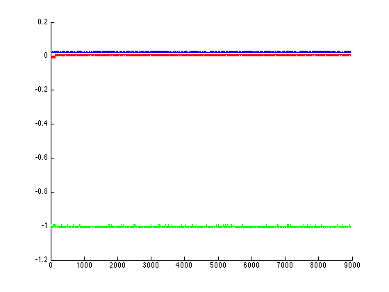
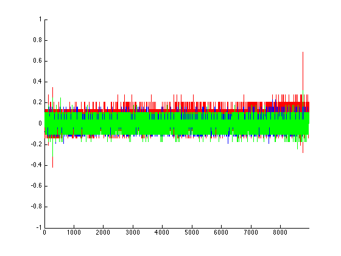

filename = 'flatData.dat';
N = importdata(filename);
Accel = N(:,1:3);
Gyro = N(:,4:6);
mean_acc_x = mean(Accel(:,1));
mean_acc_y = mean(Accel(:,2));
mean_acc_z = mean(Accel(:,3));
mean_gyro_x = mean(Gyro(:,1));
mean_gyro_y = mean(Gyro(:,2));
mean_gyro_z = mean(Gyro(:,3));
sigma_acc_x = var(Accel(:,1));
sigma_acc_y = var(Accel(:,2));
sigma_acc_z = var(Accel(:,3));
sigma_gyro_x = var(Gyro(:,1));
sigma_gyro_y = var(Gyro(:,2));
sigma_gyro_z = var(Gyro(:,3));
figure
hold on
plot(Accel(:,1), 'r');
plot(Accel(:,2), 'b')
plot(Accel(:,3), 'g')
hold off
figure
hold on
plot(Gyro(:,1), 'r');
plot(Gyro(:,2), 'b')
plot(Gyro(:,3), 'g')
axis([0 8955 -1 1])
hold off
mean_acc_x
mean_acc_y
mean_acc_z
sigma_acc_x
sigma_acc_y
sigma_acc_z
mean_gyro_x
mean_gyro_y
mean_gyro_z
sigma_gyro_x
sigma_gyro_y
sigma_gyro_z
mean_acc_x =
0.0088
mean_acc_y =
0.0208
mean_acc_z =
-1.0007
sigma_acc_x =
1.1366e-05
sigma_acc_y =
7.5908e-06
sigma_acc_z =
7.5601e-06
mean_gyro_x =
0.0479
mean_gyro_y =
0.0117
mean_gyro_z =
-0.0033
sigma_gyro_x =
0.0059
sigma_gyro_y =
0.0030
sigma_gyro_z =
0.0034
 